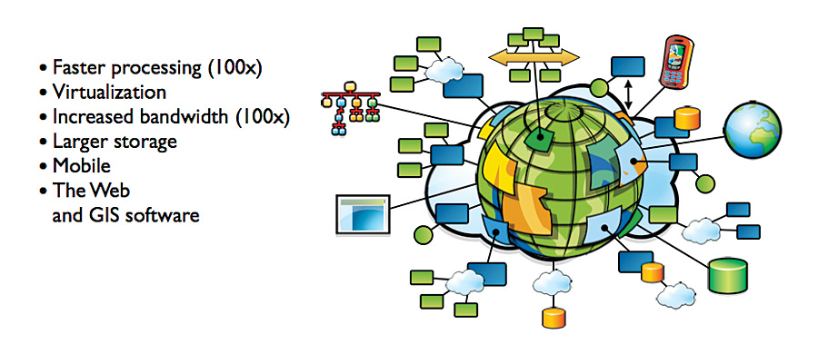

Introduction to GIS¶
What is Information?¶
Information are data that can be understood, usually a sequence of symbols and/or signals with meanings.
Information, in a general sense, is processed, organised and structured data.
It provides context for data and enables decision making.
Examples: numbers, characters, symbols musical notes, sounds, colors.
What is Geographic Information?¶
Any information that contains geographic location; e.g. where is nearest restaurant.
80% of information has location component(Field in GIS Data by Caitlin Dempsey on October 28, 2021)
What is System?¶
A collection of linked components that work together for a specific purpose.
Example 1: Car system is composed of engine, wheel, brake components, these components linked together and work for a specific purpose.
Example 2: Human body is composed of organs, tissues, bones and so on. All the components collaborate with each other to support our lives.
What is GIS(Geographic Information System)¶
A GIS is a computer-based system to aid in the collection, maintenance, storage, analysis, display, and distribution of spatial data and information(Bolstad, Chapter 1) 
What is Geoscience?¶
GIScience: The Science behind the GISystem(as tools)
Theoritical foundation on which GIS is based
Addresses the fundamental issues arising from use of geographic information.
The science is needed to keep the technology moving forward.
Analogy: GIScience is to GIS as scientist is to statistical software packages, or computer science to computer system.
Research Questions in GIS¶
How can we represent our perception of geographic space in a computer environment?
What method can we use to dig deeper in the area of geographic information?
What are the best ways we can visualize the geospatial information to make it easier to understand?